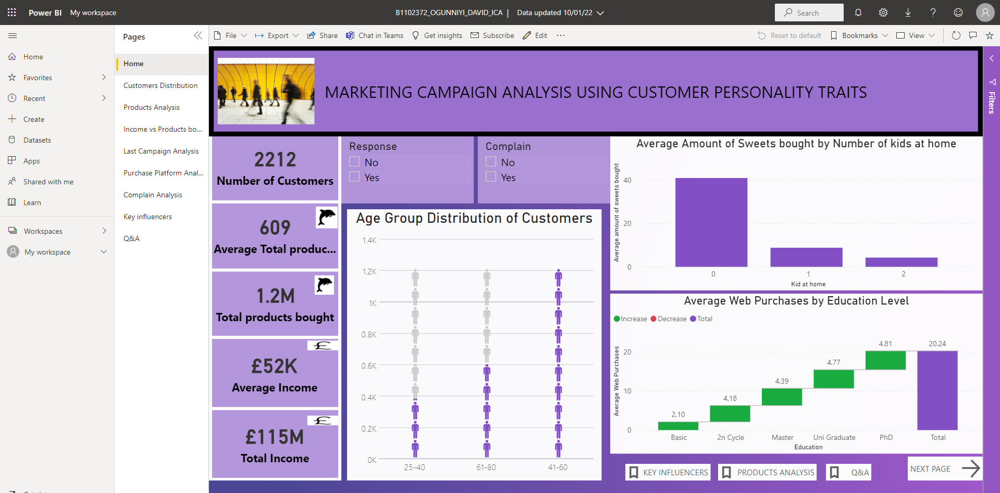
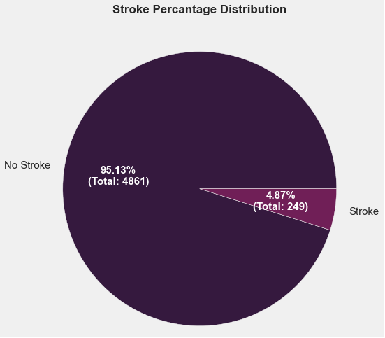
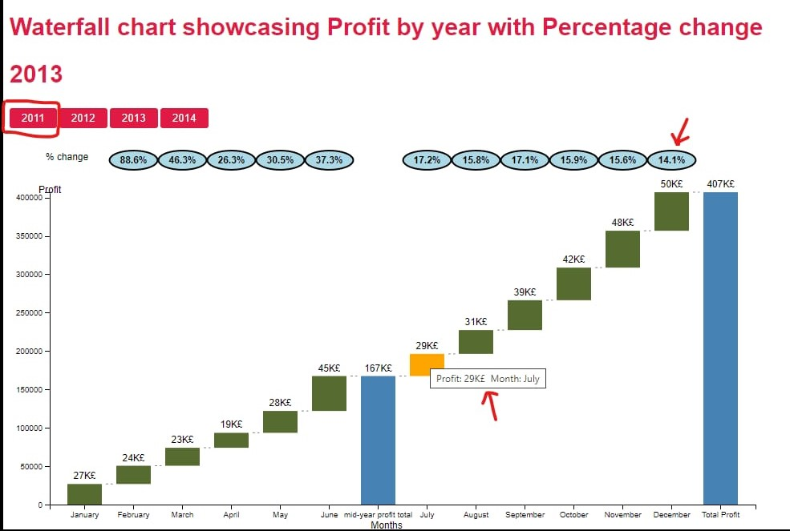
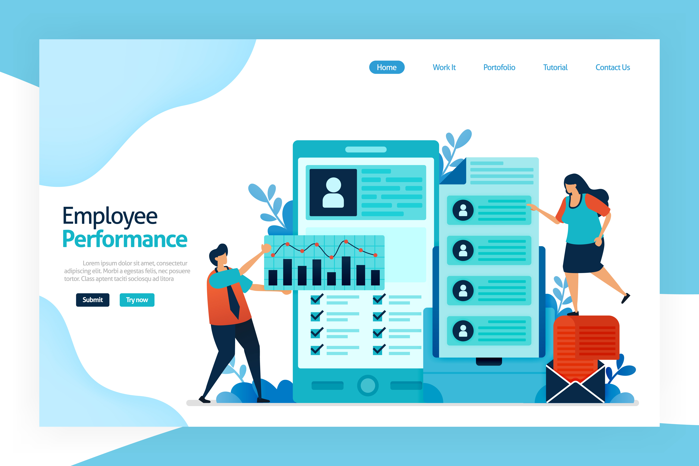

November 15, 2021
Marketing Campaign using customer personality analysis are done by every organizations in the
world. The world is evolving, and we need to evolve with it. We can’t be campaigning without
understanding our customers. For Example, YouTube uses the details or information they have on
you to suggest the channel or video you should watch to you. This research is to analyse, understand
and visualize the factors that affect the decision of our customers in the last campaign.

For financial organisations, credit card fraud has grown to be a serious concern all around the
world. Because of their great accuracy and efficiency, machine learning and deep learning
models have been applied to detect fraudulent activity. Using a credit card fraud dataset from
Kaggle/UCI, investigation of the performance of six common models, including logistic
regression, decision tree, random forest, KNN, multilayer Perceptron, and ANN was done. The
major goal was to find the most suitable model for detecting credit card fraud.

Using Python through GUI to visualize covid and police stop & search dataset. The interface is interactive.
A comprehensive study of a company’s perfect clients is called Customer personality
analysis. It helps a company to understand its customers better and makes it simple to
adapt products to meet the needs, attitudes, and affairs of different kinds of customers.Customer personality trait to advertise
will speed up the marketing campaign
and improve the company’s revenue.
In this work, i have my Response
column which makes it a labelled
dataset. We will also check the key
influencers to our response. I used three
supervised learning model, SVM
(which is Support vector machine),
RF (which is random forest) and DF
(which is Decision Tree) to train and
test

A stroke is a medical disorder that damages the brain by rupturing blood
vessels. It can also happen when the brain's blood supply and other nutrients are cut off. In the World right now,
Stroke is the second greatest cause of death and
disability, according to the World Health Organization (WHO).Making use of JupyterLab, in this
project we used machine learning algorithms like Logistic
regression, Artificial Neural Network, MLP Neutral
Network, Random Forest and K- nearest neighbours to
train 5 different models for accurate prediction.From the project, Random Forest is the best for
predicting stroke with 94% accuracy.

Purpose: To get better understanding of the company’s profit growth over the years
Functionality: Waterfall chart display of profits for each month in a year. Button to filter each year. A mid-year total profit bar. Interactive display of the profit and month. Percentage change over each month display with a bubble.
Conclusion: Increase in profit every year. Percentage change tends to reduce immediately after the middle of the year bar hence more work needs to be done to increase profits in July.

This employee performance analysis using Power BI explores the data-driven evaluation of employee performance within an organization. Leveraging Power BI's robust capabilities, this project delves into various key performance indicators (KPIs) and dimensions to provide a comprehensive view of individual and team achievements. By integrating diverse data sources and creating dynamic dashboards, this analysis offers insights into productivity, efficiency, and areas for improvement. Through visualizations and interactive features, stakeholders gain actionable insights for informed decision-making, enhancing overall organizational performance and employee development.